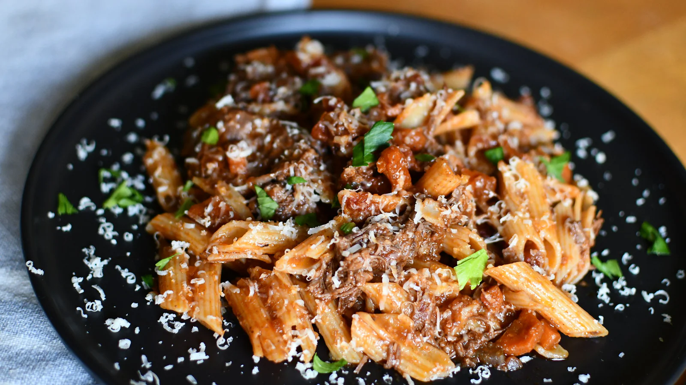

Home
Ragu recipe

Fig.1 Image of pasta with Ragu on top
Description (6 ppl)
This is a recipe for the beloved Italian classic Ragu
Ingredients
- 1 Large yellow onion
- 3 Sticks of celery
- 3 Carrots
- Salt
- Pepper
- 800 Grams of ground beef
- 1 Dl of red dry wine
- 1 dl of tomato puree
- 800 Grams of passed tomatoes
- 1 Litre of water
- 3 Bayleafs
- 100 Grams of pasta per person
Steps
- Start by finely chopping the onion, Carrots, and celery
- Add these in a large pan with olive oil, and let fry for a couple minutes
- and add some salt and pepper
- Add the ground beef, stir frequently until most of the water has evaporated
- Add the wine, let it evaporate
- Add the tomato puree, stir it in for a minute
- Add the passed tomatoes along with the water and bayleafs
- Let simmer for about 2-4 hours, or until enough water has evaporated
- Serve with pasta and grated parmigiano reggiano